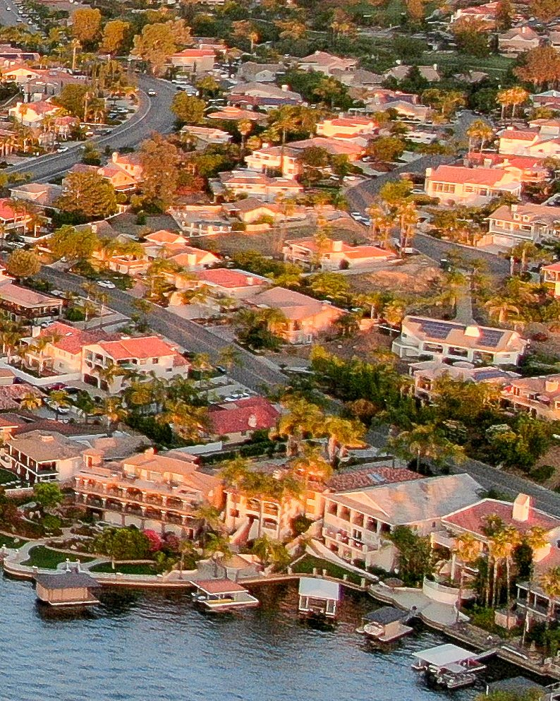
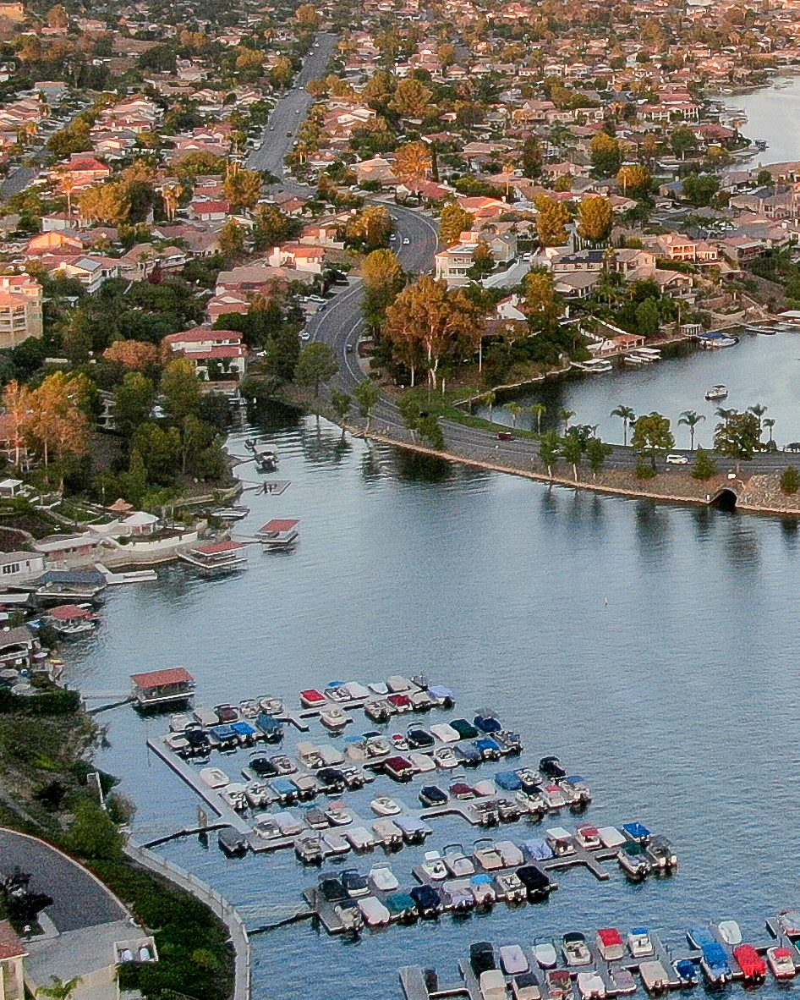
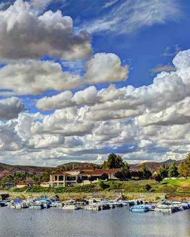
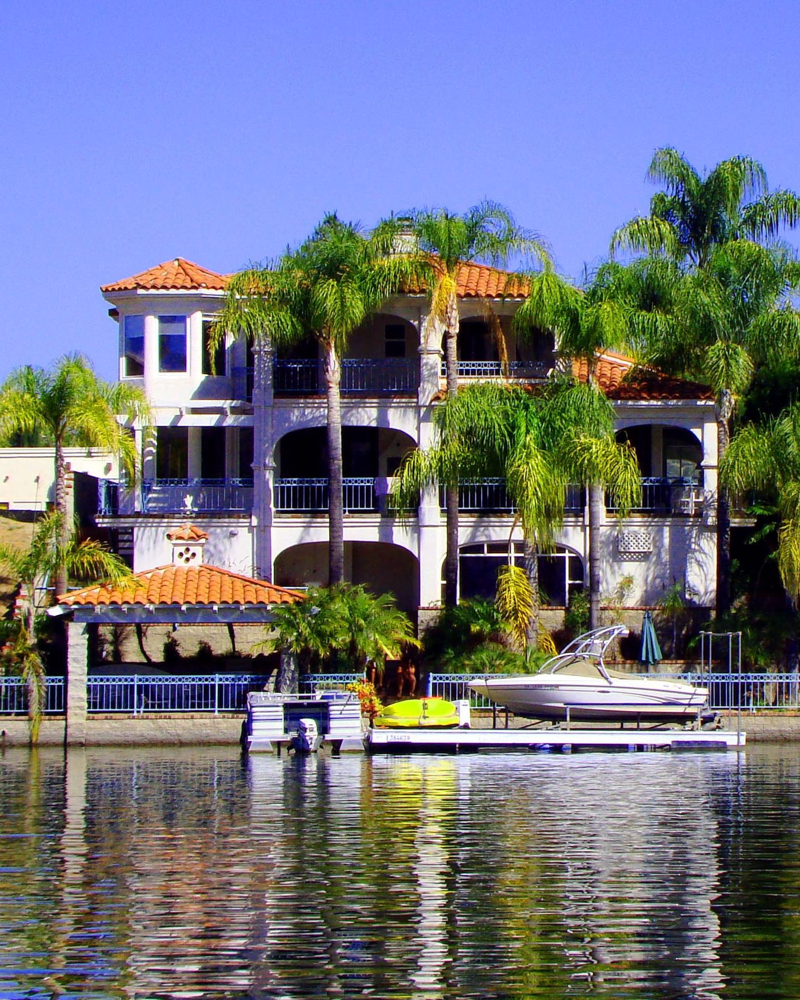
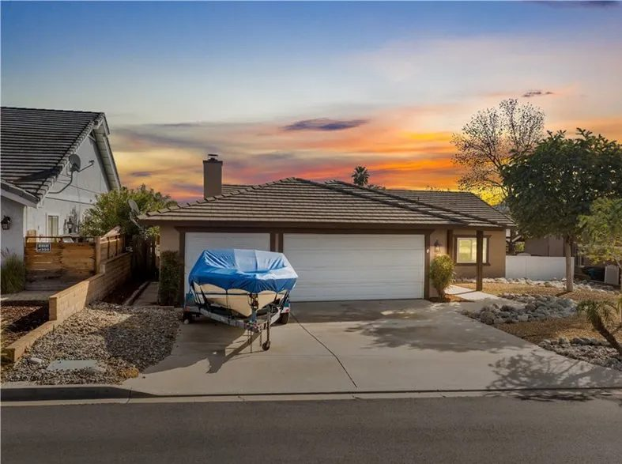
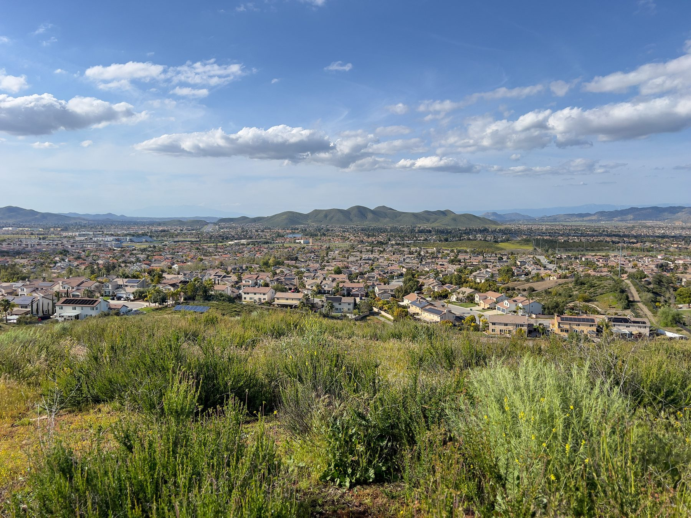
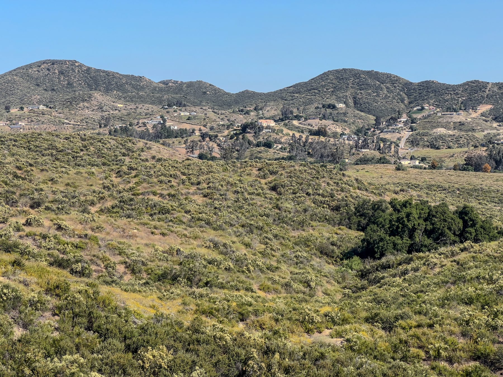
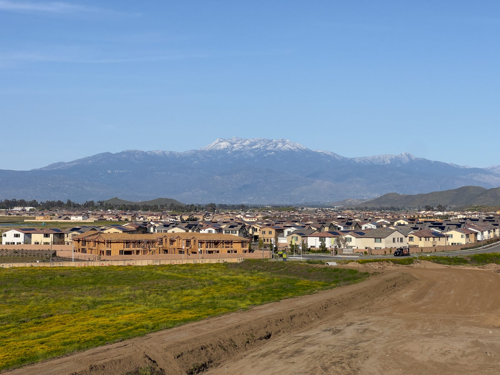

01

Canyon Lake, Riverside County
Homes around the reservoir at the center of a gated city, with saved searches and the things Jim checks before you write an offer.
Canyon Lake at a glance
Canyon Lake surrounds a reservoir on the San Jacinto River, between Lake Elsinore and Menifee in Riverside County. It began as a private, master-planned community in 1968 and became a city on December 1, 1990.
The City describes itself as one of five gated cities in California. Every home is in the Canyon Lake Property Owners Association, all but a few roads are private, and the entrances are gated, open to residents and the guests they approve. The lake itself belongs to Elsinore Valley Municipal Water District, which runs it as a drinking water reservoir.
Saved searches
Each card opens a live search of MLS listings, updated as they change.

01

02

03

04
<!-- IDX_ZONE: homes-for-sale-canyon-lake-ca-feed -->
The newest Canyon Lake listings in one compact row, six to eight homes. Builder places the Showcase hotsheet shortcode here in its compact layout.
Canyon Lake is the old Railroad Canyon Reservoir. The California Southern Railroad built a line along the San Jacinto River from Perris to Elsinore in 1882, and after floods washed out the tracks, the Temescal Water Company bought the right-of-way and began Railroad Canyon Dam in 1927. The reservoir covers 383 acres and has 14.9 miles of shoreline.
Elsinore Valley Municipal Water District owns and operates it. Runoff from the San Jacinto River and Salt Creek fills it, and its water feeds the district's Canyon Lake treatment plant. In heavy rain, water spills over the dam and runs on to Lake Elsinore.
Corona Land Company began building Canyon Lake in 1968, and the Canyon Lake Property Owners Association was formed the same year. Every home in the city belongs to it, and all but a very few single-family lots are inside the gates.
There are three gates: the Main Gate off Railroad Canyon Road, the East Gate off Goetz Road and the North Gate off Greenwald Avenue. Residents drive through with transponders issued by the association, and guests get in only when an owner has authorized them in advance.
The association, a not-for-profit corporation, maintains the common areas: about 37 miles of private roads, the parks and beaches, the golf course, the equestrian center and the Lodge. It does not own the lake. It leases the recreation rights from the water district, so boating and fishing run under its rules.
Owners pay assessments that fund the roads, lake management, patrols and the amenities. The rules cover architectural changes, parking and lake safety, and every boat on the lake is registered with the association each year, within its limits on length and weight.
City Hall, a Riverside County branch library and the association's offices share a building in the Canyon Lake Towne Center, across Railroad Canyon Road from the Main Gate. The association's rules apply inside the gates; building permits and structural questions go to the City.
Water comes from two districts. Elsinore Valley Municipal Water District serves most of the city, and Eastern Municipal Water District serves a few hundred homes on the northeast side, mostly north of Canyon Lake Drive and east of Mayflower Drive.

Day to day
School information is factual and by district. Always confirm a specific address in the district's school finder.
Sold by Jim
One of more than 1,200 homes he has sold since 2005.

Channel Way Drive
Questions
Nearly all. The City's Housing Element says all but a very few single-family lots are inside the gates, and every home in the city belongs to the Canyon Lake Property Owners Association.
Elsinore Valley Municipal Water District owns and operates it as a drinking water reservoir. The association leases the recreation rights, so boating and fishing run under its rules, for residents and their guests.
Lake Elsinore Unified School District, which lists Canyon Lake among the cities it serves. Its online locator lists the schools for a street address, so confirm a specific address there.
By road from City Hall, downtown Riverside is about 32 miles away, Ontario International about 40 miles and John Wayne Airport about 55 miles.
Nearby




Resources
Contact
Tell him which part of Canyon Lake you have in mind, on the water or off it, and he will tell you what he knows about it before you go and see it.